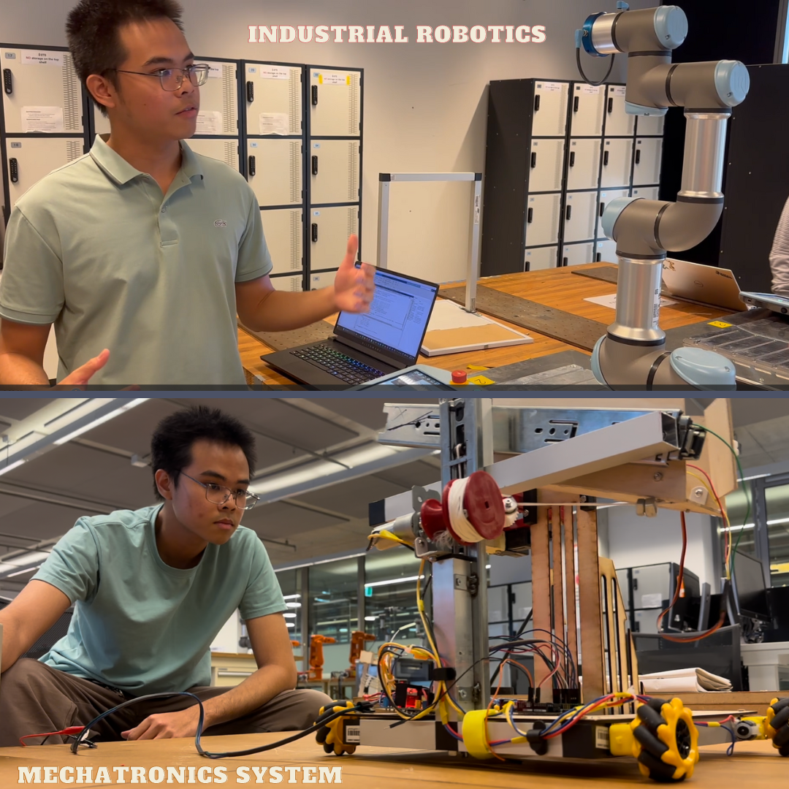

Mechatronics student - Robotics enthusiast
My journey in mechatronics engineering has been a profound exploration into seamlessly merging software with hardware to orchestrate system functionalities.
As I delved deeper, a profound realization struck me—I harbor an unwavering passion for the intricate interplay of software in powering various systems, particularly recognizing its pivotal role as the beating heart behind robots and other technologies.
3D printer enthusiast
My fascination with 3D printing technology stems from a simple yet powerful reason: the ability to transform ideas into tangible objects. While immersing myself in 3D modeling using SolidWorks, I often pondered how to turn those digital designs into physical realities. Discovering the incredible potential of 3D printing sparked my passion, prompting me to invest in my own printer. That decision marked the beginning of an enamored journey with this technology.
Upon using the 3D printer for six months, I ventured into establishing my own 3D printing service from home. However, during my continuous operation of the Ender 3 V2, I encountered a challenge. The deflection in the X gantry caused misalignment issues with the gantry, disrupting its parallelism with the bed's surface. Determined to rectify this, I embarked on a new endeavor: crafting my own 3D printer.
While some suggested acquiring a new printer with upgraded features, I opted to build my own, driven by the cost-effectiveness of sourcing components from China rather than purchasing branded spare parts. This decision not only resolved the issue but also paved the way for my independent projects—each a testament to my innovative approach and dedication to mastering the world of 3D printing.

See the need, fill the need
'See the need, fill the need' - Rodney Copperbottom, encapsulates my ethos of constant innovation and self-improvement. This mantra is the driving force behind my commitment to continuously enhance not just my work but also myself."
Self-explaination
I learn by explaining things to myself. It's like having a conversation with myself until I can explain a concept without any trouble. This way, I know I've really understood it. This method, also known as Feynman's method, was created by the physicist Richard Feynman, one of my favorite scientists who was involved in the Manhattan Project.
Practice makes perfect
I adhere to the belief that mastery begins with repetitive engagement, wherein individuals immerse themselves in their work repeatedly until the underlying principles become evident. As an engineer, I embrace this ethos in my approach to learning. I firmly advocate for the cultivation of an innate familiarity with the complexities within our specialized domains.
This proactive immersion ensures that when confronted with challenges, relying on a deep-seated understanding is more effective than referencing lecture materials or textbooks at the point of need.